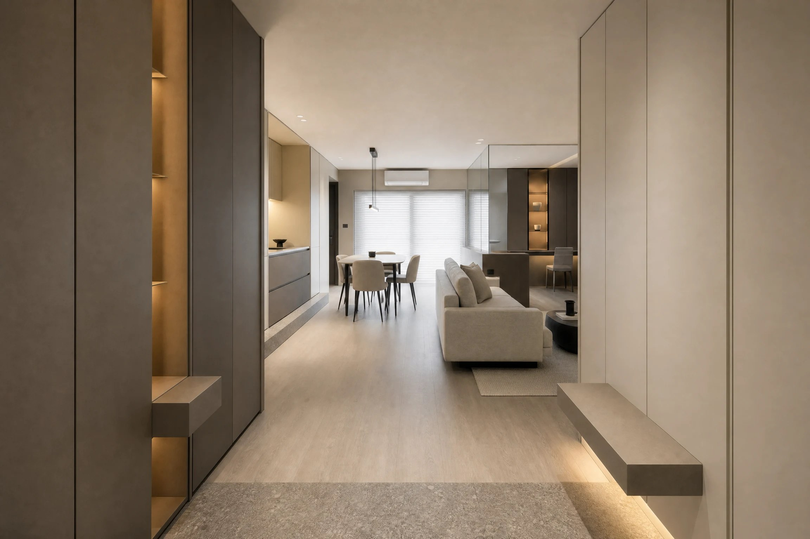
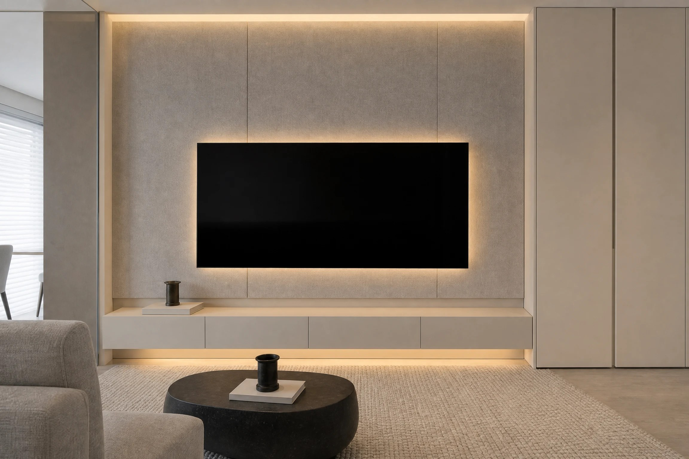
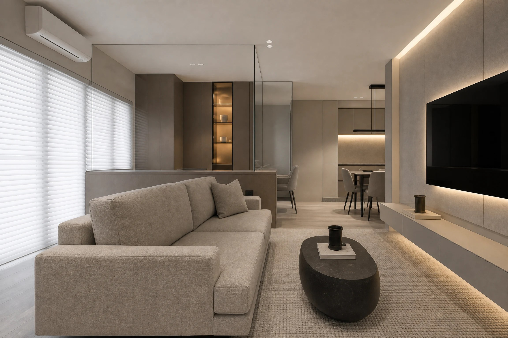
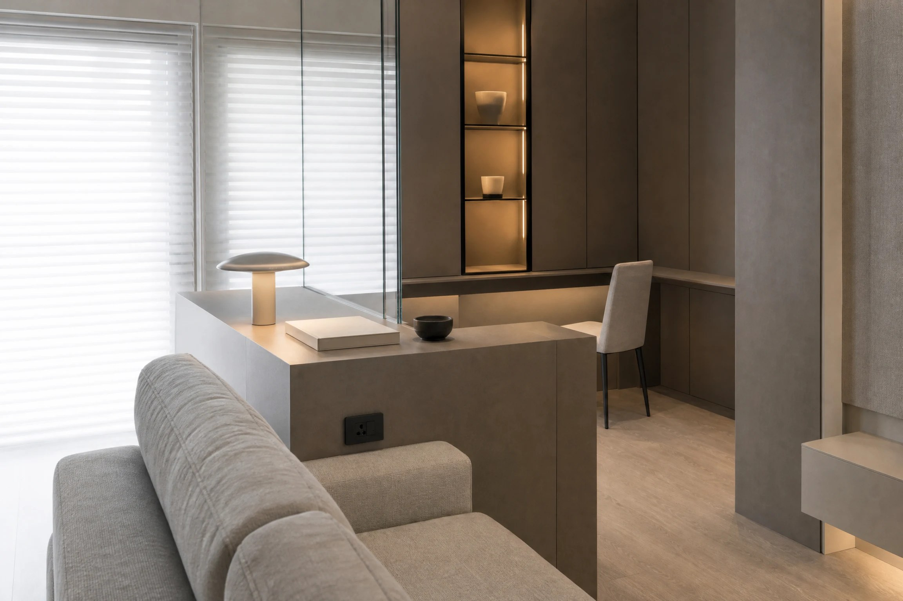
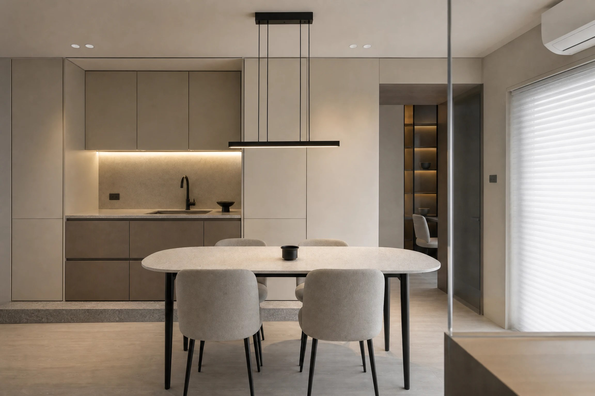
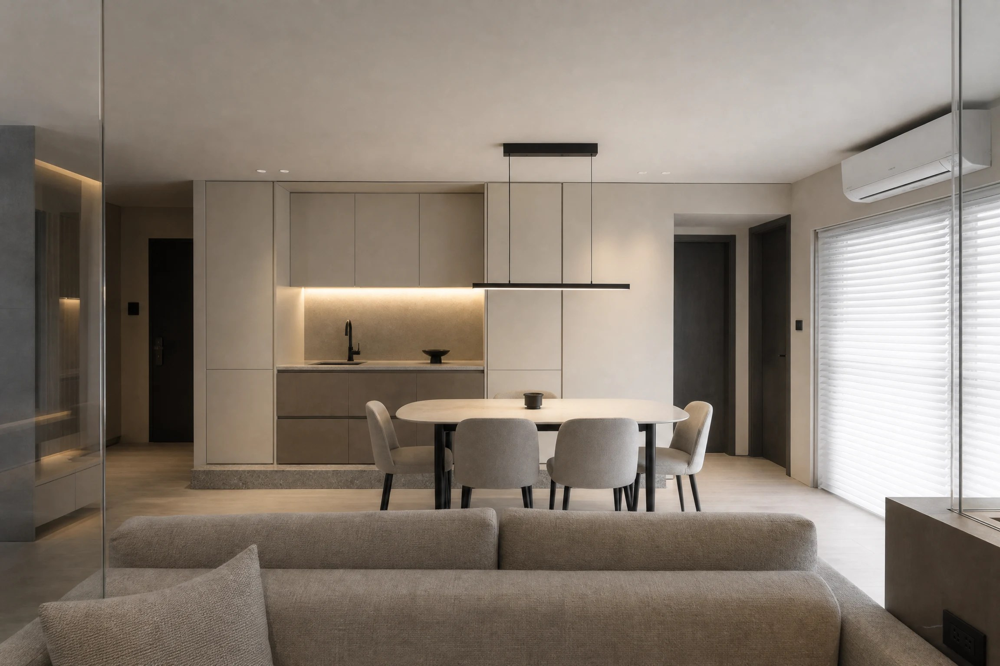
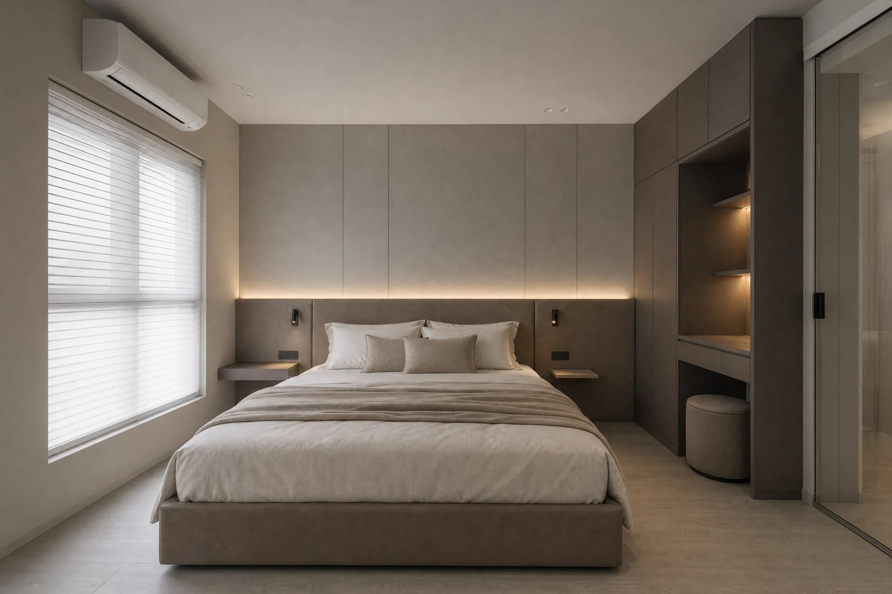
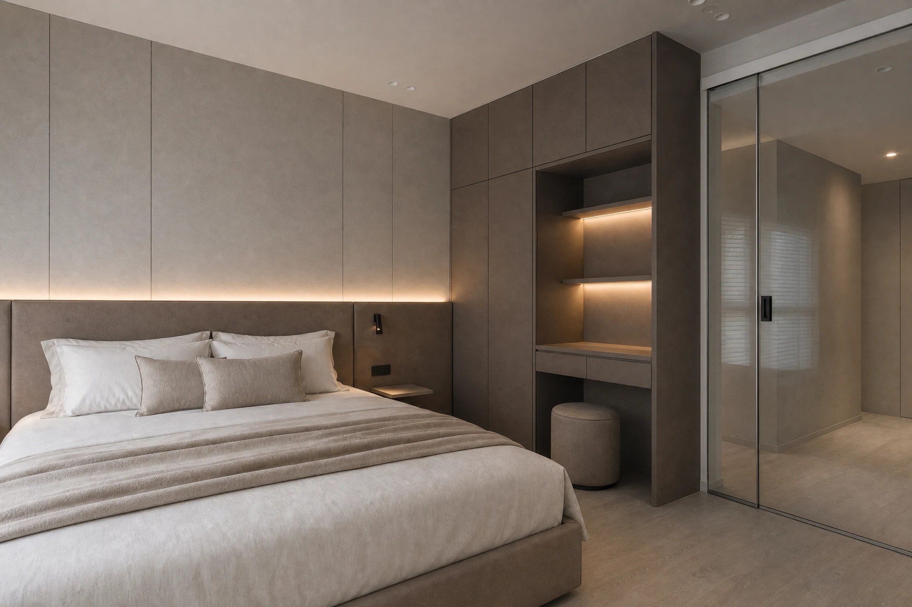

翰閣室內設計《秋蟬 Autumn Cicada》 留白裡的溫潤日常
空間作品
安靜、溫潤、不張揚，卻經得起每日反覆凝視，是這對年輕夫妻對家的想像。翰閣室內設計以「微光」與「質地」作為主軸，在有限的坪數裡以留白換取呼吸感，讓光線與材料自己說話，構築出新作《秋蟬 Autumn Cicada》。秋光緩緩落入室內，木質與暖灰交織成靜謐層次，如蟬聲遠去，留下沉靜而溫柔的生活餘韻。

基地為單面採光的長形格局，主要窗面落在客廳一側。設計師選擇不以隔間切割空間，而是將廚房、餐廳、客廳沿著同一條軸線排開，讓自然光得以從落地窗一路延伸至玄關。整體色彩以低飽和的暖灰與米色打底，牆面、櫃體與地坪僅以明度上的細微差異區分層次，視覺因此得以放鬆，空間感也隨之被放大。

玄關處，設計師以一塊石紋地坪劃出落塵區，深灰櫃體與淺色牆面在此相接，形成低調的明暗對比。左側高櫃內嵌開放層架與線性燈帶，右側則以一道懸浮平台作為穿鞋椅，底部同樣藏入光源，讓量體彷彿漂浮於地面之上。收納被完整地藏進立面裡，畫面因此乾淨俐落，卻又不失溫度。
以光為界，柔化空間邊緣
翰閣室內設計進一步說明，本案幾乎不使用主燈，而是以間接光作為主要照明語彙。電視牆頂端的燈帶自天花洩下，將布質面板的纖維紋理輕輕托出；電視背後的暈光與懸浮電視櫃底部的光帶，則讓整道牆面在夜晚成為一幅發光的畫。光線不再只是照亮，而是用來描繪材料的邊緣，讓每一個轉折都顯得柔和。

公共區域的天花與樑柱交接處，設計師以鏡面包覆樑體，讓原本壓迫的結構線條在反射中消失；鏡面同時複製了窗光，令空間深度倍增。客廳的沙發背後以一道半高的檯面收邊，既是沙發的靠背，也是通往書房的界線，檯面上方再以清玻璃延伸至天花，讓書房保有安靜，又不阻斷視線與光。


一張桌子的距離，餐廚與書房的日常
屋主平日在家工作，希望書房與公共區域之間保持適度的連結。書房緊鄰客廳，深灰櫃體之中嵌入一組發光的展示層架，陳列的器物在暖光裡成為視覺的停頓點；桌面延伸至牆角，僅以一張單椅與一盞桌燈完成配置。半高檯面的另一側即是沙發，工作與休憩之間，只隔著一張桌子的距離。

餐廳與廚房則被整合為一道完整的立面。上下櫃以米色與淺褐兩種面材區分，中段的檯面與壁面鋪以石紋，下方的燈帶讓備餐區在夜間依舊明亮。橢圓餐桌搭配四張灰色布質餐椅，上方懸吊的黑色線性吊燈是整個公共區域唯一的深色線條，恰好替柔和的畫面下了一個乾淨的註腳。


安靜的私領域，讓光留在牆上
主臥延續公共區域的語彙，床頭牆以大面布質面板分割成規律的直向線條，下緣藏入燈帶，光線沿著床頭板向上暈開，成為夜晚唯一需要的照明。床頭兩側的懸浮小几與壁燈以最小的體量存在，不干擾牆面的完整。

臥室另一側，深灰色系統櫃之中挖出一處梳妝區，層板下方同樣嵌入燈帶，與床頭的光遙相呼應。更衣室以一道茶色玻璃拉門相隔，半透的質地兼顧了遮蔽與延伸，關上門時，玻璃裡映著的仍是那一片柔和的光。

全案不依賴繁複的裝飾，而是以光、質地與留白三者，反覆推敲每一個面的交接。當材料的邊緣被光柔化，家便在安靜之中，長出屬於居住者自己的溫度。
《秋蟬 Autumn Cicada》
設 計 者」翰閣室內設計 HANGO DESIGN
攝 影 者」翰閣影像
坐落位置」嘉義縣
完工年份」2025
主要材料」布質面板 石紋美耐板 木地板 茶色玻璃 鏡面
面 積」28坪
翰閣室內設計
以居住者的生活習慣為起點，相信空間不需要說太多話。翰閣室內設計擅長以低飽和色彩、間接光與材料質地構築安靜的居家表情，在有限坪數裡以留白換取舒適，讓每一個家都能在日常裡慢慢長出自己的樣子。
圖片提供」翰閣室內設計
攝影」翰閣影像
撰文」翰閣室內設計